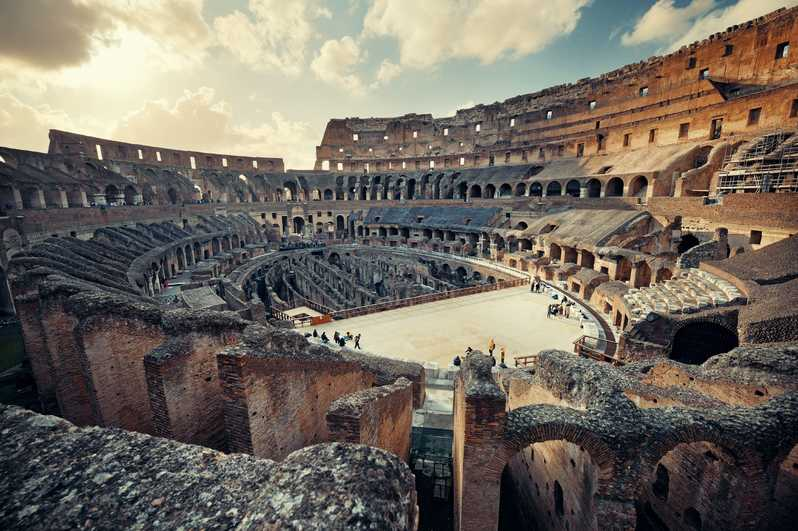
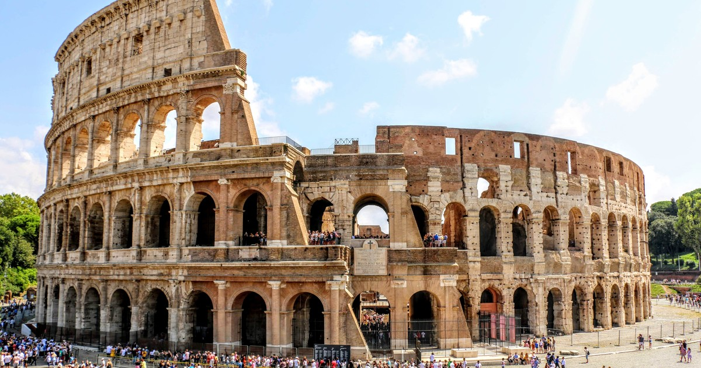
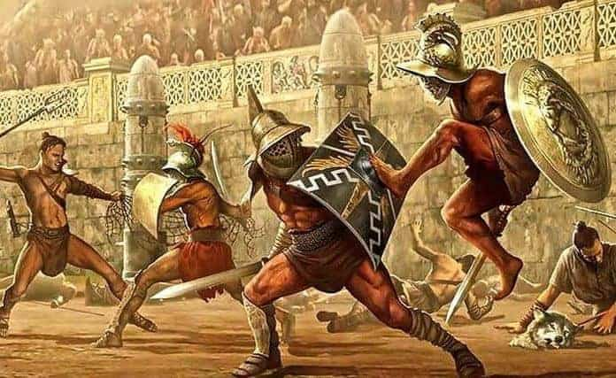

Hringleikahúsið í Róm
Flavínskahringleikahúsið er eitt af helstu einkennum rómaveldis. Hringleikahúsið er hringlaga, eins og nafnið ber ef til vill til kinna, mannvirki sem byggt var til að hlada skemmtanir af ýmsum toga, líkt og til dæmis bardaga, dýraveiðar og aftökur. Það þekur um 190m X 150m og er 48m á hæð, sem gerir það að stærsta mannvirki í rómaveldi. Colosseum gat einnig setið um 50.000 manns og skýlt þeim frá veðri og vindum með tjaldi sem hægt var að draga alveg fyrir opið a toppinum.
Hringleikahúsið er byggt á árunum 70 e.kr til 82. e.kr, á tímum Vespasíanusar keisara og Títusar. Vespasíanus dó árið 79 e.kr og náði þar af leiðandi ekki að sjá verkið út og á endanum lauk Títus við byggingu þess. Colosseum var fyrsta hringleikahúsið til þess að vera byggt ofanjarðar, áður fyrr höfðu þau aðeins verið grafin niður. Fyrst voru settir niður 6 metra stólpar til þess að halda húsinu í stað, það var einungis sandur í botni salsins og var þess vegna möguleiki að þar hafi farið fram sjá/vatnaorustur. Undir stóra salnum var þó kjallari þar sem fangar og dýr voru dæmd til að dúsa löngum stundum á milli bardaga.

Colosseum var í notkun til ársins 217 e.kr, þegar þrumuveður skall á og elding strauk það, þá varð ofsalegur eldur sem skemmdi bygginguna illa. Byggingin var látin vera til um 240 e.kr, en þá hófust viðgerðir á því, þær viðgerðir tóku um 12 ár og kláruðust um 252 e.kr. Flestir tengja Colosseum við bardaga skylmingarþræla en þeir fóru lengi fram þar, eða til um 350 e.kr, þá voru siðaskipti í Rómaveldi og kristni tekin upp.

Það eru þó til heimildir um bardaga eftir þau, en eru síðstu heimildirnar um þá frá 435 e.kr. Hringleikahúsið var þó notað langt fram á sjöttu öld, þá aðalega fyrir dýraveiðar. Eftir fall rómaveldis átti Colosseum ekki marga dagana sæla, með tímanum byrjaði húsið að eyðileggjast og miklu var stolið úr því, þá sérstaklega steinum til þess að byggja önnur hús, t.d Péturskirkjuna. Í dag er Colosseum talið eitt helsta mannvirki hins gamla heims og er megin ferðamannasegull Rómar.